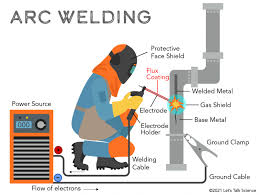

Learning Resources

welding machines that allow for stick welding all nessarey supplies for welding and we have a very nice shop
Importance of career in welding for the community it helps build buildings and cars and other things the community uses 
There are many diffrent types of projects from learning the basics to building food trucks to making decorations 7th graders made shovels something useful to help around the home.
welding machines that allow for stick welding all nessarey supplies for welding and we have a very nice shop
my name is Davin curran funk and i chose welding. i chose welding due to the fact that i have adhd and its a very active and enjoyable trade.